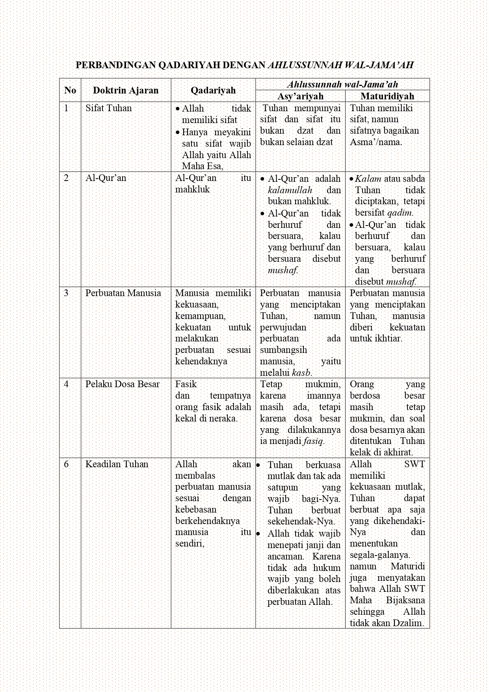

E-
Modul
ilmu kalam
Karakteristik Aliran Qadariyah
Karakteristik Aliran Jabariyah
Nilai Moderasi Beragama
Ayo Uji Kemampuanmu 3!!
Referensi
PERBANDINGAN ANTARA ALIRAN QADARIYAH DENGAN ALIRAN
AHLUSSUNNAH WAL JAMAAH
